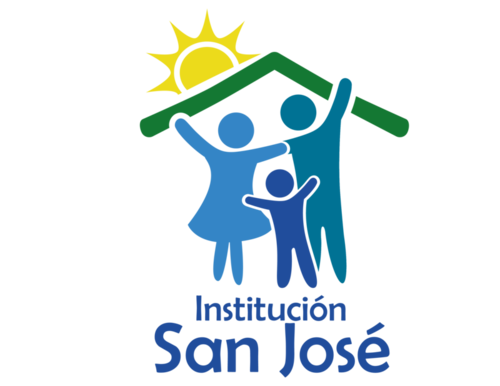

<!-- /*!
* CREACION DE USUARIOS DE PAGINA SOFTWARE FUNDACION SAN JOSE EN IONIC 5 ANGULAR 9 MATERIAL 9 Bootstrap 4.5.3 - Agency v1 (HASTECNOLOGIA SAS)
* Copyright 2020-2021 Start HASTECNOLOGIA S.A.S 
* @author HASTECNOLOGIA S.A.S Copyright 2020-2021 The FUNDACION SAN JOSE Authors
* pathweb=(HASTECNOLOGIA SAS/menu/creacionusuarios)
* pathAplicationConfig=creacionusuarios.page.html
* SecurityContext: @angular/fire/auth, APPLICATION_XML,'Access-Control-Allow-Origin' (solo por peticion Get se accede a este metodo)
*/*!
* creacionusuarios v0.0.1 (HASTECNOLOGIA SAS/menu/creacionusuarios) 
* Copyright 2020-2021 FUNDACION SAN JOSE, Inc. 
* Licensed under MIT (HASTECNOLOGIA SAS)
*/ -->
<ion-content>
  <div id="main" >
      <div class="content-page">
          <!-- Start content -->
          <div class="content">
              <div class="container-fluid">
                  <div class="container">
                    <div class="content container-fluid">
                      <div class="row justify-content-sm-center text-center py-10">
                        <div class="col-sm-7 col-md-5">
                          <h1 *ngIf="user.role == 'Super Maestro'">Gestiona las instituciones y usuarios que acceden a tu aplicación.</h1>
                          <h1 *ngIf="user.role != 'Super Maestro'">Gestiona la institución y usuarios que acceden a tu aplicación.</h1>
                          <div class="text-center text-sm-right mr-sm-4 mb-5 mb-sm-0">
                            
                          </div>
                          <p *ngIf="user.role == 'Super Maestro'" >Por medio de los botones gestiona tus intermediarios y usuarios.</p>
                          <p *ngIf="user.role != 'Super Maestro'" >Por medio del botón gestiona tu información y usuarios.</p>
              
                          <div *ngIf="user.role == 'Super Maestro' || user.role == 'Coordinador'" class="col-auto"> 
                            <ion-button color="success" fill="outline" (ngSubmit)="verModalManager()" (click)="verModalManager()">
                              <ion-icon name="apps-outline"></ion-icon> Manager
                            </ion-button>
                          </div> 

                          <div *ngIf="user.role == 'Super Maestro' || user.role == 'Coordinador'" class="col-auto"> 
                            <ion-button color="success" fill="outline" (ngSubmit)="verModalCampanas()" (click)="verModalCampanas()">
                              <ion-icon name="calendar-number-outline"></ion-icon> Campañas
                            </ion-button>
                          </div> 

                          <div *ngIf="user.role == 'Super Maestro' || user.role == 'Coordinador'" class="col-auto"> 
                            <ion-button color="success" fill="outline" (ngSubmit)="verModalCoordinador()" (click)="verModalCoordinador()">
                              <ion-icon name="albums-outline"></ion-icon> Coordinador
                            </ion-button>
                          </div> 

                          <div *ngIf="user.role == 'Super Maestro'" class="col-auto"> 
                            <ion-button color="success" fill="outline" (ngSubmit)="verModalSuperMaestro()" (click)="verModalSuperMaestro()">
                              <ion-icon name="storefront-outline"></ion-icon> Super Maestro
                            </ion-button>
                          </div> 
                          <div *ngIf="user.role == 'Super Maestro'" class="col-auto"> 
                            <ion-button color="success" fill="outline" (ngSubmit)="verModalCreacionNew()" (click)="verModalCreacionNew()">
                              <ion-icon name="person-add-outline"></ion-icon> nuevo usuario
                            </ion-button>
                          </div> 
                          <div  class="col-auto"> 
                            <ion-button color="success" fill="outline" (ngSubmit)="getIntermediarios()" (click)="getIntermediarios()">
                              <ion-icon name="search-outline"></ion-icon> consultar
                            </ion-button>
                          </div> </div>
                      </div>
                      <!-- End Row -->
                    </div>
                  </div>

              </div>
              <!-- END container-fluid -->
          </div>
          <!-- END content -->
      </div>
      <!-- END content-page -->
  </div>
</ion-content> 